This research was supported by NSF award OAC-2311142 and used Delta at NCSA through ACCESS allocation CIS220162 (NSF awards 2138259, 2138286, 2138307, 2137603, 2138296).
The corpus was originally created by the Human Rights Program at the University of Minnesota in partnership with the Observatory on Disappearances and Impunity in Mexico (UNAM, FLACSO). We thank Barbara Frey, Maria Ignacia Terra, Yolanda Burckhardt, Maria Larson, Rosaleen Joyce, Hunter Johnson, Olga Salazar Pozos, Paula Cuellar Cuellar, and Carrie Booth Walling. Funding from Fulbright-COMEXUS, the UMN Human Rights Initiative, and the Ohanessian Endowment.
Can we re-use that prior coding work without recoding it?
A turn-by-turn pipeline that uses the codebook as the task schema to focus the LLM:
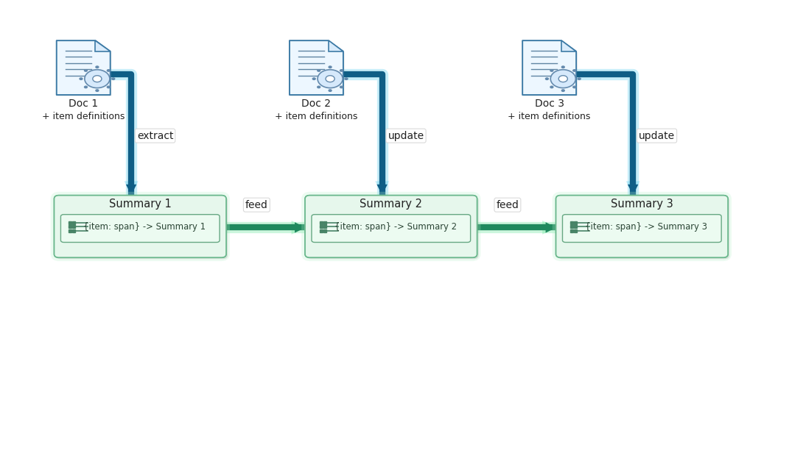
| victim_id | label_key | span | offset |
|---|---|---|---|
| Veracruz_J J R R | desenlace | “…sigue en la búsqueda, se ha convertido en detective…” | 2480 |
| Veracruz_J J R R | vic_grupo_social | “Carmelo estudiaba arquitectura en una escuela privada de diseño…” | 2691 |
| N.L._Fabián H V | desenlace | “En el expediente no hay registros del plagio ni testimonios.” | 2585 |
| Veracruz_María Victoria C T | captura_tipo | “…sustraídos de un taxi entre la calle 13 y avenida 11, frente al DIF Municipal…” | 1254 |
| N.L._Fabián H V | captura_tipo | “…sustrajeron al empresario del vehículo siniestrado y se lo llevaron…” | 4109 |
The offset is the character position where the span begins in the original text, so a researcher can trace it back and verify.
Coahuila_Ezequiel C T, four documents:
| turn | info found | labels found | summary (excerpt) |
|---|---|---|---|
| 0 | : | : | (no summary produced) |
| 1 | yes | desenlace, vic_grupo_social | “Cuatro personas… fueron secuestrados por policías preventivos… y entregados a un cártel…” |
| 2 | : | : | (previous summary preserved unchanged) |
| 3 | yes | + captura_tipo | “…siete jóvenes detenidos por policías locales y entregados a Los Zetas…” |
Noisy documents do not corrupt the running summary. New evidence accumulates labels.
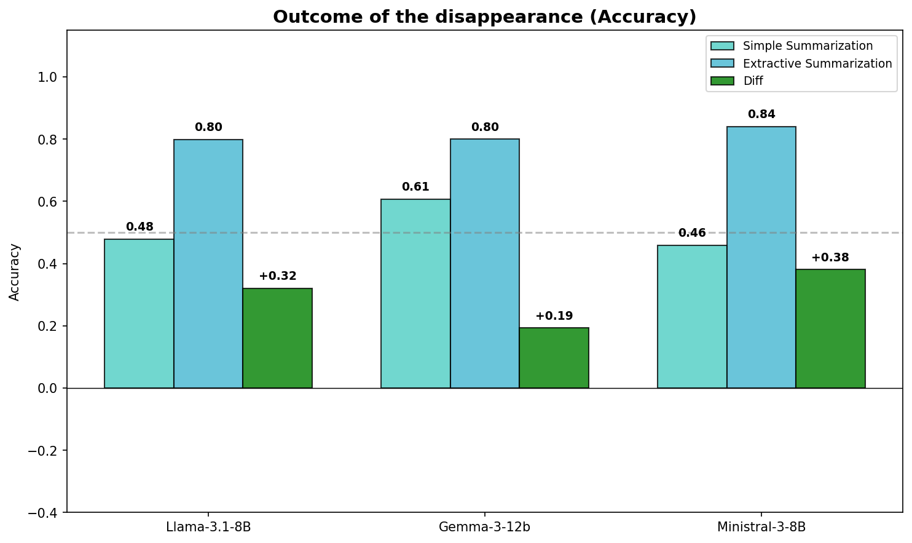
Outcome (desenlace)
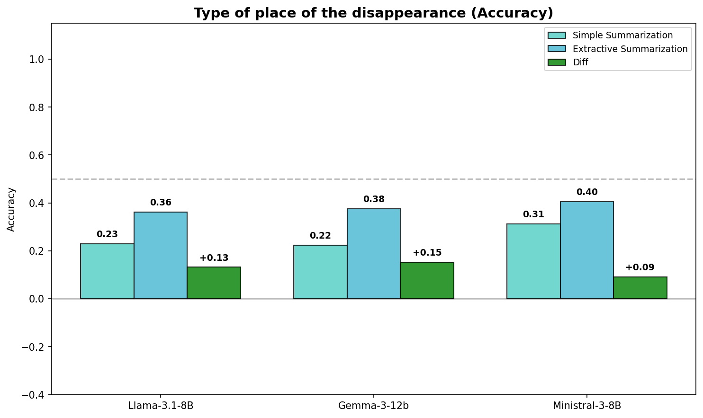
Place of capture
The improvement comes from the workflow, not from any single model.
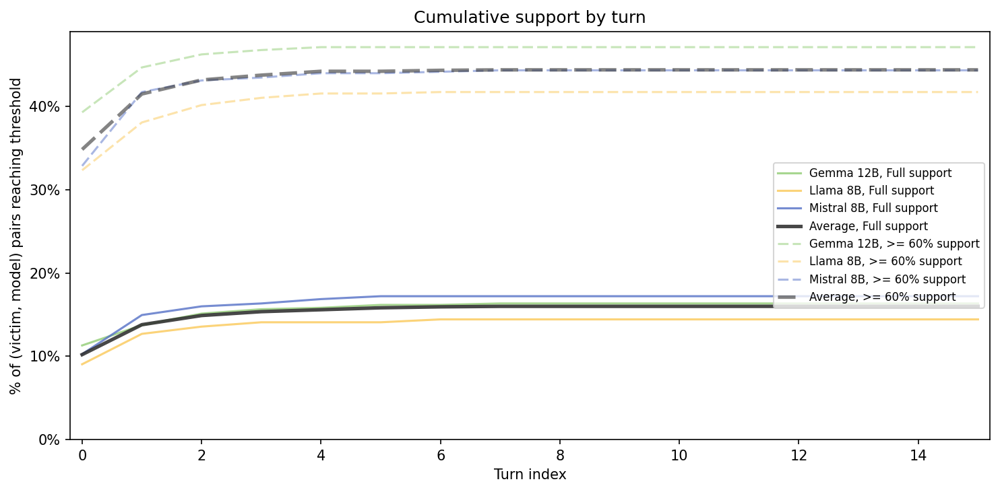
| Label | Input | Macro F1 |
|---|---|---|
| Outcome | Raw text | 0.656 |
| Summary | 0.723 | |
| Social group | Raw text | 0.418 |
| Summary | 0.484 | |
| Place of capture | Raw text | 0.600 |
| Summary | 0.587 |
When using paraphrase-multilingual-MiniLM-L12-v2 with logistic regression classifier, the cleaned summary is favored compared to using the raw text.
| Model | Time | GPU |
|---|---|---|
| Llama-3.1-8B-Instruct-AWQ-INT4 | ~34 min | A100 |
| Ministral-3-8B-Instruct-2512 | ~51 min | A100 |
| Gemma-3-12B-IT-INT4-AWQ | ~38 min | A100 |
See more of our work at UTD Event Data
Xingyuan Zhao, Xingyuan.Zhao@UTDallas.edu
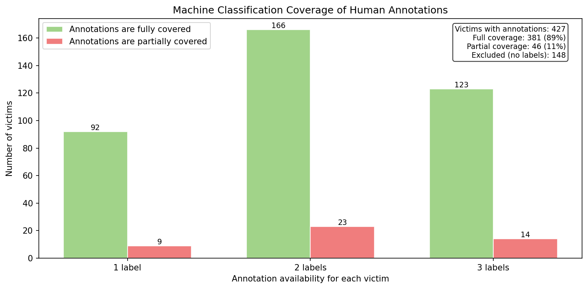
| Category | Count |
|---|---|
| Desenlace (n = 393, 32% missing, 2 distinct) | |
| Still disappeared | 254 |
| Found | 139 |
| Captura tipo (n = 243, 58% missing, 2 distinct) | |
| Places related to the victim | 81 |
| Public and institutional spaces | 162 |
| Vic grupo social (n = 273, 53% missing, 5 distinct) | |
| Professionals | 145 |
| Civil servants | 61 |
| Students | 45 |
| Other | 19 |
| Organized crime | 3 |
Knowing which is which is itself a contribution to transparency.
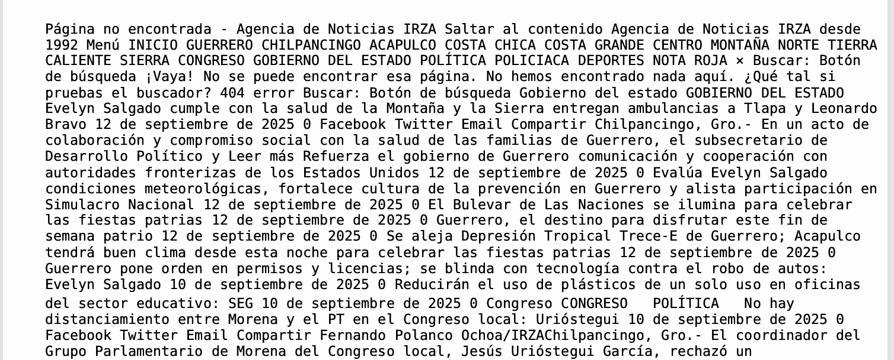
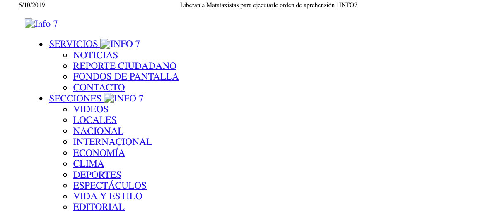
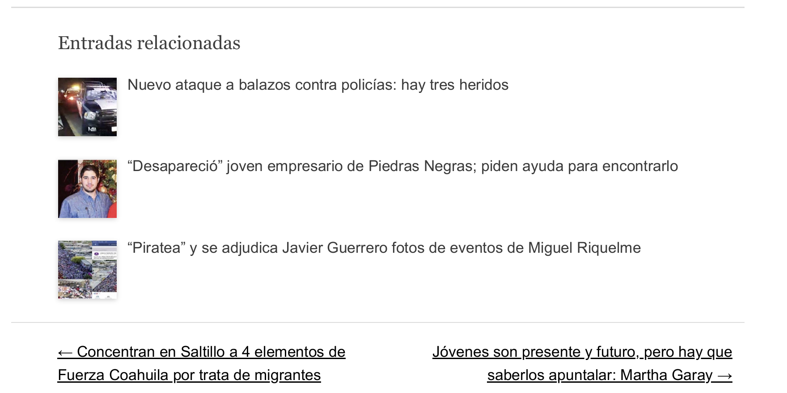
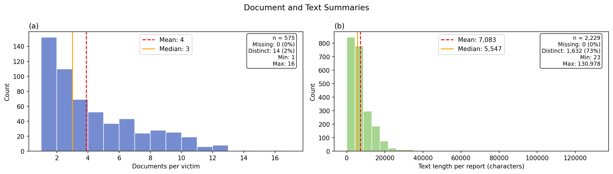
575 victims, 2,229 reports. Median 3 reports per victim. Median report length ~5,500 characters; long tail to >130k.
Picking relevant and low missing rate labels:
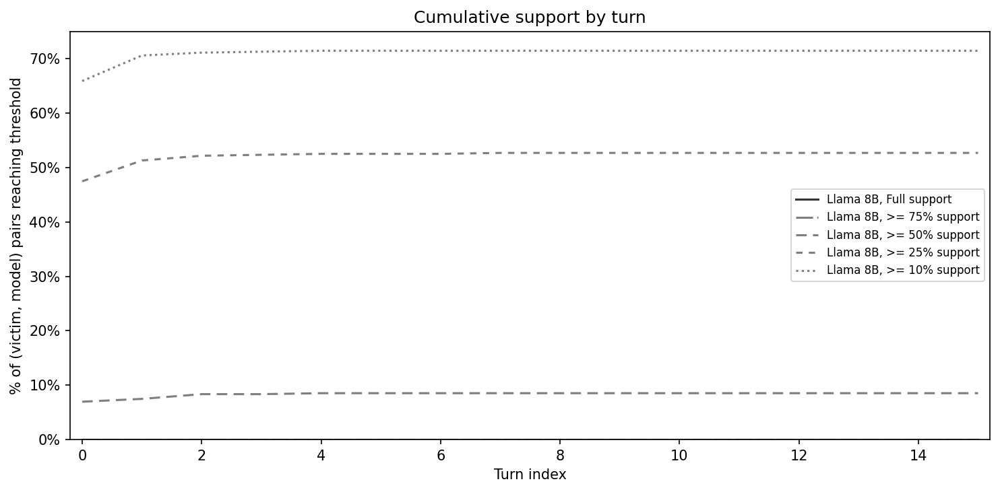
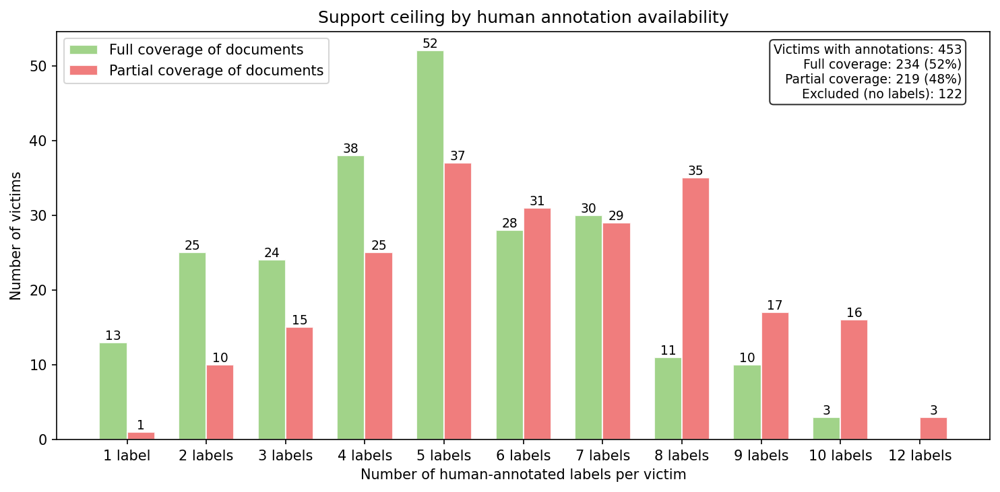
Social group: Simple vs. Extractive
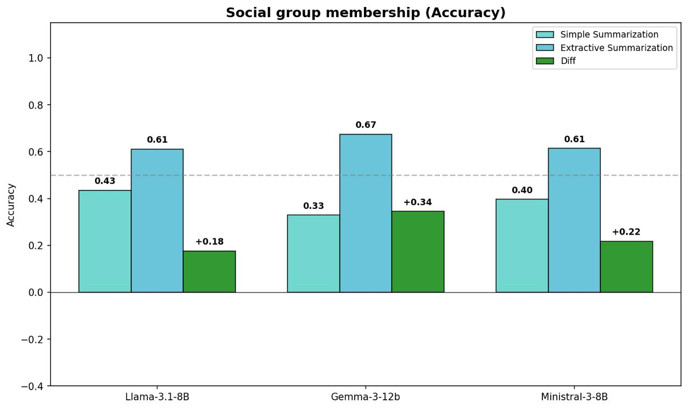
Social group